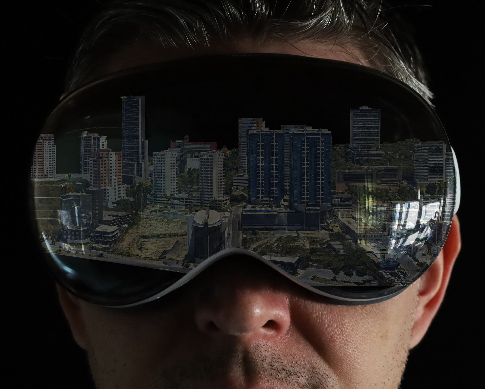
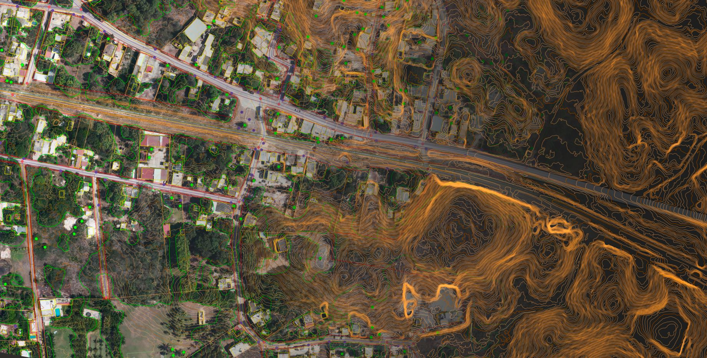
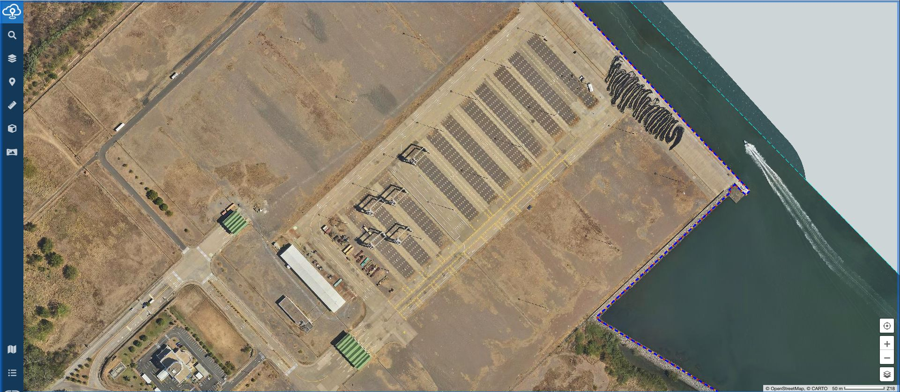
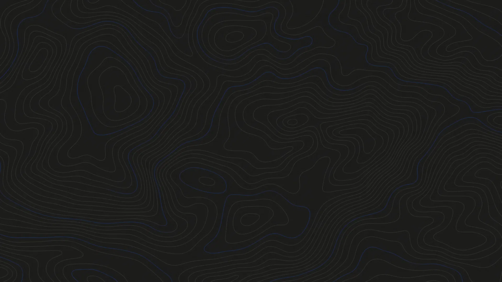

El reto
Analizamos tu contexto, tu operación, tus objetivos y la información disponible. Sin entender bien el problema, ningún mapa tiene sentido.



Tu decisión mejora cuando sabes exactamente dónde está el problema. Capturar información geográfica, construir las herramientas correctas y estructurar los procesos adecuados convierte cualquier reto en una respuesta clara con impacto real. En CartoData lo hacemos posible.
Convertimos problemas complejos en soluciones claras poniéndolos en el mapa.
Solucionemos tu reto
Tu organización enfrenta decisiones complejas todos los días con información incompleta, dispersa o difícil de interpretar. El contexto geográfico que necesitas existe, hay que hacerlo visible.
Un proceso probado en 375 proyectos y 16 países para convertir tu reto en una solución clara.
Analizamos tu contexto, tu operación, tus objetivos y la información disponible. Sin entender bien el problema, ningún mapa tiene sentido.
Levantamos, actualizamos y estructuramos la información geográfica para que pueda ser usada, no solo almacenada.
Convertimos la información en flujos claros para que tus equipos operen mejor sin depender de interpretaciones.
Creamos herramientas visuales para consultar, analizar y decidir con mayor claridad desde cualquier lugar.
La información más precisa no sirve si nadie la usa. Nos aseguramos de que se integre a tu operación real.
Propuesta principal
Tener tecnología no es suficiente. Muchas organizaciones tienen datos, pero no están listos para decidir. Tienen procesos, pero no siempre están ordenados. Tienen software, pero no siempre resuelve la operación real. CartoData integra las tres piezas en una solución geoespacial completa.
Información confiable para saber qué está pasando realmente en tu operación.
Metodología para ordenar cómo se captura, interpreta y usa la información.
Herramientas digitales para visualizar, administrar y convertir la información en acción.
El proceso, visualizado
Información en múltiples fuentes, formatos y ubicaciones. Sin vista unificada.
Estructura geográfica consolidada. Validada y lista para análisis.
Inteligencia clara y accionable. Toma de decisiones confiada en toda tu organización.
Consolidamos fuentes dispersas en una estructura geográfica unificada dentro de eCarto — lista para análisis, visualización y toma de decisiones en tiempo real. Esa es la transformación.


CartoData · Procesos
Estructuramos flujos de trabajo geoespaciales que transforman datos complejos en decisiones claras. Cada proceso está diseñado para reducir tiempos, eliminar errores y generar resultados reproducibles a cualquier escala.
Casos de éxito